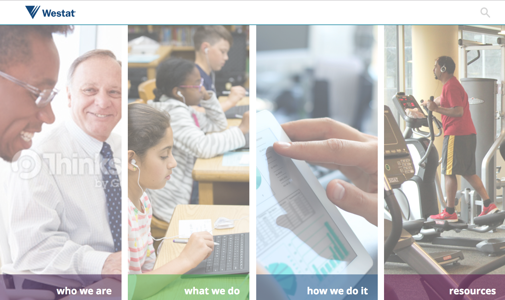
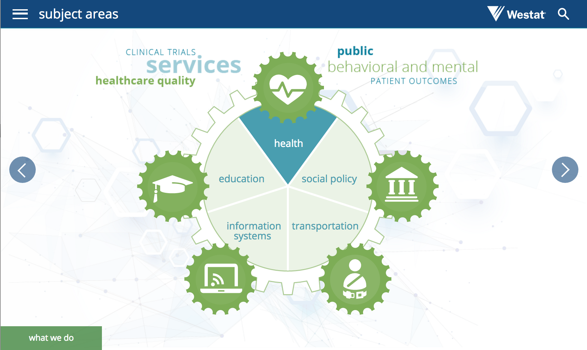
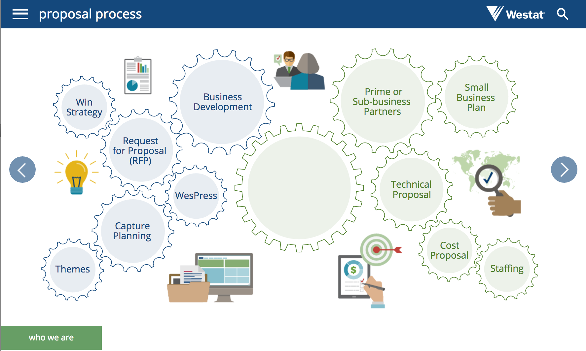
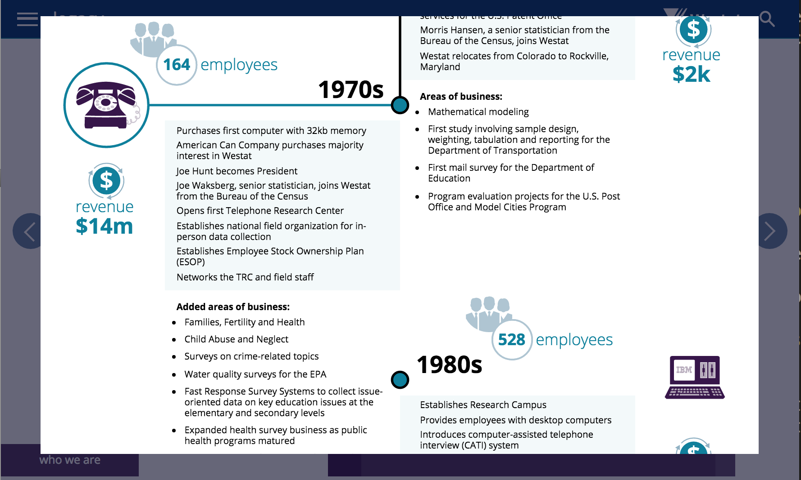

About Me
I am a front end developer comfortable with a variety of frameworks and libraries and especially experienced in custom styling/css, accessibility and 508 compliance, complex data collection and forms, and long-term development of large web applications. I have a background in education, excellent communication skills, and a solid grasp of Bash, Node, and the entire ecosystem of front end tooling. Above all, I love to learn and develop new skills, so even if I haven't worked on your exact stack or problem set, I may still be a great fit.
My Experience
My experiences as a developer are broad and have given me crucial experience with many tools, especially React and Angular. Among other things, I have built out a large portion of the React-based data collection module of Health and Human Services' grants management platform, have worked as part of an Agile team on a complex Angular site for trucking companies to submit and track federal documentation for international imports, and have developed curriculum for a React professional development course commissioned by American Express. I also have a solid understanding of many other key development tools: I developed insight into the constraints of database design and administration and a solid understanding of both ends of API development through my time in a full stack bootcamp and later work integrating with various back ends; I learned D3 for a volunteer project and was able to use that knowledge to provide accessibility support for the D3 visualizations of the results a large government survey; to make developing a complex but repetitive employee training tool more manageable, I selected and employed Vue.js.
My career has also prepared me for many of the challenges that arise in web development. I have worked on large, ongoing projects, coming in during development and learning the structure and idioms of existing codebases, often working with remote team members across timezones, helping break long-term requirements into smaller, extensible solutions. I have also worked on contract for tiny web development shops with a shoestring budget, providing my best advice for how to adapt designs and plans to get the most work done in the fewest number of hours. I have worked on tight deadlines, have quickly diagnosed and resolved breaking issues, and have worked closely with designers, often producing products that look exactly like what the customer expects but sometimes pushing back on those designs when they don't provide the best interactive or responsive experience. I enjoy thoroughly understanding and improving my tools and have written Bash and Node scripts to improve the efficacy of my teams' tooling.
*A note on this page: Although I have updated its content and style a bit over the years, its structure and functionality are largely unchanged from when I first built it at the end of my web development bootcamp, and so it does not work in the way it would if I were to make it now. Most egregiously, it is not accessible. A new version is in progress, but it isn't my top priority.
Featured Projects
Westat@Work
Westat@Work will be the main onboarding resource for Westat, a research corporation with over 2000 employees. It consists of four modules with dozens of pages of content and many custom animations and interactions. I was brought on by Westat to build the site based on their designs, and was fully responsible for the implementation and architecture.
Westat@Work is a 508 compliant single-page application with a custom routing system handling dozens of pages of content, an object based content management system, a hand-made search engine to sift through that content, and many unique animations and illustrations created using both CSS and SVG. The site was styled entirely with custom CSS organized with the BEM methodology.
Notice: Westat@Work is currently a work in progress. Though the second module, 'what we do', is largely complete, I am still waiting for content for the other three modules, work on 508 compliance is ongoing, and there are still many small, final details to work out. However, I am immensely proud of the work that I have done so far, and, despite its incomplete state, I still believe that the site demonstrates my technical proficiency.
Single Page Application
I built Westat@Work as a single-page application using the Vue.js framework, so that all content loads at once and, after the initial page load, users can move through the many simulated 'pages' of the site without any load delay. I implemented a simple, custom router system so that each 'page' is associated with a location hash in the URL, so, even though it's all technically one page, the address bar can be used to navigate directly to content in the site, and the forward and back buttons can be used to navigate within the site.
Most 'pages' in the site fall into one of a few categories, design-wise, and new pages in those categories can be created simply by providing the content model with the text and images that go on the page and entering the new page's location hash in the router's page index. Also, because the entire site's content is stored in one model object that is downloaded when the first page is loaded, I was able to easily implement a search function that operates entirely on the front end, without any calls to the server.
Custom Pages, CSS, and SVG
For several pages on the site, the designers envisioned interactions and click events with oddly shaped elements, like gears. The original planning called for different background images to render based on interaction with invisible <div> elements, but, using SVG, I was able to recreate the images as fully interactive, web native elements, resulting in a faster, smoother interaction.
On this page, the pie pieces and outer gears have hover and click events:
On this page, each gear is a unique element drawn by a custom function that can accept options to modify radius, shape, number of teeth, depth of teeth, and more:
In another part of the site, the plans called for using a complex pdf timeline of the history of Westat. Using SVG and CSS, I was able to exactly replicate the timeline with web native elements, allowing it to be responsive, animatable, and 508 compliant.
As the user scrolls through the timeline, scroll-based breakpoints trigger animations:
Although the site does not use responsive break points, it was implemented entirely with responsive units, so every element should display to scale with the width of the screen it is being viewed on.
discendo
discendo, from the Latin meaning 'for learning', grew out of my own frustrations with learning management systems, and especially systems for creating and administering online assignments. Although there are a few good systems out there, none of them seem to take into account the facts that most teachers already have dozens, if not hundreds, of carefully crafted and formatted assignments and that the one thing teachers never have enough of is time. discendo allows a user with very basic computer skills to upload a pdf, mark it up in a WYSIWYG editor, and publish the assignment as a web form in just a few minutes.
Although the assignment tool is the key feature of discendo, the app also includes a broad set of LMS features. An instructor can sort students into classes, give assignments to those classes, track assignment completion, and view class-wide and individual results. Students can search for and join classes, view all assignments or sort them by class, complete assignments, and view their results.
Try it out!
discendo is being hosted here. You can create your own account or use my test account: email: wasson@wasson.com, password: password.
Technical Details
The app is built on a Rails backend, with hashed and salted password storage through Devise, Paperclip based image upload and conversion, AWS image hosting, with a Postgres database running on Heroku, and front-end styling with Google's Material Design Light framework.
The Assignment Creation Process
When the user uploads a pdf, the Paperclip gem, using ImageMagick settings configured to carefully balance storage size with image clarity, converts it to a png image file and saves it to Amazon Web Services. The user is taken to another page where the file is displayed. The user can click on the image to highlight individual questions, and can resize or remove their highlights. Once the user is satisfied, they can submit their assignment. discendo bundles the image together with its name, creator information, and a JSON string that contains the information necessary to reconstitute the highlighted sections. A student can then take the assignment, clicking on the highlighted sections to reveal form inputs, with results that, when submitted, are immediately available to the instructor.
More Work Samples
discendo
Rapid, user-friendly web form creation and dissemination
Westat's Educator Interactive
Page designed as a sales piece for a touch screen kiosk
Housing Insights Project
Web platform designed to centralize and display affordable housing data
WesDaX Promo
Single Page App promo piece
Shipping Project
A simple full stack app built to practice various back end tools
blogz
A Sinatra based micro-blogging app
WoF
Front end game based on a popular game show
Solitaire
An implementation of the Beleaguered Castle variant of Solitaire
Hex Clock
A simple but attractive clock app
discendo
Rapid, user-friendly web form creation and dissemination
Westat's Educator Interactive
Page designed as a sales piece for a touch screen kiosk
Housing Insights Project
Web platform designed to centralize and display affordable housing data
WesDaX Promo
Single Page App promo piece
Shipping Project
A simple full stack app built to practice various back end tools
blogz
A Sinatra based micro-blogging app
WoF
Front end game based on a popular game show
Solitaire
An implementation of the Beleaguered Castle variant of Solitaire
Hex Clock
A simple but attractive clock app